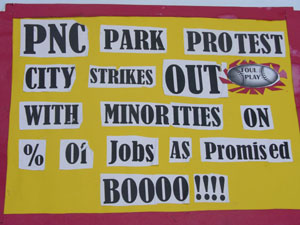

Submitted on Sun, 01/21/2007 - 1:24pm
 Despite the below-freezing wind chill and icy patches on the ground, New Yorkers showed yet another display of endurance as more than 50 people converged in Brooklyn to demand an end to Handyfat Trading Co.’s union-busting activities. In early January, Handyfat management illegally fired nine workers for union activity, despite the company’s claims they were fired because of their immigration status.
Despite the below-freezing wind chill and icy patches on the ground, New Yorkers showed yet another display of endurance as more than 50 people converged in Brooklyn to demand an end to Handyfat Trading Co.’s union-busting activities. In early January, Handyfat management illegally fired nine workers for union activity, despite the company’s claims they were fired because of their immigration status.
Today’s picket and march, organized by the Industrial Workers of the World (IWW) and Make the Road by Walking /Se Hace Camino Al Andar, proved, as it has on many previous occasions, that workers and their supporters are not backing down from the company’s attempts to repress the movement towards basic wage and hour rights. Beginning at 11 AM, workers and supporting community members picketed outside of Handyfat, then marched down Knickerbocker Ave. to Associated Supermarket, where owners have committed numerous wage violations against their workers.
At the Handyfat Trading Co., workers have been continuously subjected to harsh conditions and discrimination by their employers. In late December, owner Dennis Ho demanded that everyone at Handyfat submit their Employment Eligibility Verification form (I-9 Form) to prove that they are legally entitled to work in the U.S. Shortly after this, nine union workers were fired for failing to submit their forms. In a blatant display of illegal union busting, one worker tried to comply with their demands and was turned away by management. These terminations follow 2006’s strong drive of union organizing at the shop, and workers believe the firings are a direct retaliation for union activity. By law and regardless of immigration status, workers in the United States must be paid the minimum wage and have a right to organize.
"This is horrible--we make him money and now he tosses us into the street like we're garbage," commented Pedro Hidalgo Campos, a fired Handyfat union worker.
At Associated Supermarkets, management has failed to pay their workers minimum wage and overtime – and some workers have been paid solely in tips with zero benefits. Local community group Make the Road by Walking recently launched a campaign, ¡Despierta Bushwick! (Wake Up Bushwick!), to shed light on the rampant exploitation of immigrant workers in the retail sector. According to the website, the campaign has already pressured multiple employers to pay over $600,000 in back wages to immigrant workers in the community, and has filed a lawsuit to recover at least $1 million in back wages for more than forty workers at Associated, and is also calling for a boycott of the company.
Today’s activities highlighted the growing strength of the unionization campaign at Handyfat, Associated and other Brooklyn companies that put profit before the rights of their workers. A turnout like this on such a cold day shows that this community is united and determined to stop the injustice in our backyard. But our work is nowhere near done, and there will doubtless be many more pickets on many more frigid mornings before we finally see an end to the modern day slavery imposed on our neighbors.
Submitted on Sat, 01/20/2007 - 9:05pm
Pittsburgh is on the verge of three large building projects that exacerbate some of the most serious problems of the labor movement in our region. A new hockey arena for the Pittsburgh Penguins is being pushed through by all of the usual political players with great haste, much the way the Steelers’ and the Pirates’ got their stadium. John Chalovich of the IBEW/Joint Council of the Building Trades/Western PA Builders Guild actually chairs the board of the Sports and Exhibition Authority. The SEA, our public authority, is three steps ahead of the deal, borrowing money from the state and working to change zoning laws months before the team is committed to a deal. In December, they even paid for a study to justify a Project Labor Agreement and entered into the agreement with the same motion.
Submitted on Sat, 01/20/2007 - 3:51pm
This article has been removed.
The web editor neglected to check the (unedited) article for inaccuracies, and regrets that oversight.
Submitted on Sat, 01/20/2007 - 2:02pm
 Rockville, Maryland- Employees at a Starbucks store here announced their membership in the IWW Starbucks Workers Union [www.StarbucksUnion.org] today and served a list of demands on their manager including a living wage, secure work hours, and the reinstatement of union baristas illegally fired for organizing activity. The action marks the expansion of the SWU to a third state- baristas began joining the union in New York City and the campaign grew to Chicago last August. Starbucks cafes were completely non-union in the United States before the Industrial Workers of the World initiated its organizing drive in 2004.
Rockville, Maryland- Employees at a Starbucks store here announced their membership in the IWW Starbucks Workers Union [www.StarbucksUnion.org] today and served a list of demands on their manager including a living wage, secure work hours, and the reinstatement of union baristas illegally fired for organizing activity. The action marks the expansion of the SWU to a third state- baristas began joining the union in New York City and the campaign grew to Chicago last August. Starbucks cafes were completely non-union in the United States before the Industrial Workers of the World initiated its organizing drive in 2004.
"No worker should have to deal with understaffing on one hand and the inability to get enough work hours on the other," said Seth Dietz, one of the Maryland baristas who declared his union membership. "Only an independent voice on the job will win baristas the respect we deserve and that's why the expansion of the organization to Maryland is so gratifying."
Submitted on Sat, 01/20/2007 - 1:58pm
 Michael L. Mack
Michael L. Mack
District Manager, Starbucks Coffee Company
2600 Park Tower Drive, Suite 100
Vienna, VA 22180
January 19, 2007
Dear Mr. Mack,
We are members of the IWW Starbucks Workers Union (SWU), a labor organization for employees at Starbucks. As you may know, we are united to secure our work hours, earn a living wage, and win respect for our labor. Today baristas at a store in your Maryland-based district have announced their membership in the Union. They join workers at stores in New York City and Chicago who have done the same. We insist that you respect their right under domestic and international law to join a union.
Employees at Starbucks who have joined the SWU have improved their wages and working conditions through collective action. As this process proceeds in your district, the SWU will be monitoring your conduct closely. We strongly encourage you to obey the law and avoid joining the Starbucks managers who have chosen to cross the line into illegality.